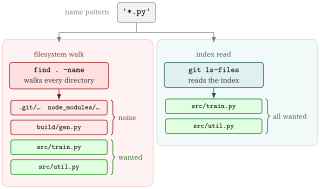

- Git has no
git findsubcommand. The equivalent isgit ls-files, which lists paths from the index instead of walking directories
# the git-native equivalent: tracked + untracked, .gitignore honoured
git ls-files --cached --others --exclude-standard | grep '\.py$'🎯 Goal
🔎 Objective
Suppose that you want every Python file in a repository. Git ships git grep for searching contents, but there is no git find for searching names.
$ find . -name '*.py'
./src/train.py
./src/util.py
./build/gen.py # ⚠️ .gitignore'd build outputfind has no idea it is inside a repository, so you start bolting on exclusions -not -path './build/*', then
$ find . -name '*.py' -not -path './build/*'
./src/train.py
./src/util.pyBut there are several problems:
| Problem | Consequence |
|---|---|
find does not read .gitignore |
Build output and caches pollute the results |
| Every exclusion is manual | The -not -path list drifts out of sync with .gitignore |
| No notion of “tracked” | You cannot ask for only files Git is versioning |
What Really We Want
- A name search scoped to the files Git already knows about
- With the ignore rules applied by Git rather than by flags you have to remember, and a way to say tracked only, untracked only, or everything.
Solution: git ls-files is the git find you are looking for
Key Takeaways
findwalks directoriesgit ls-filesreads the index, i.e., the list of paths Git already tracks

The three scope flags are the whole vocabulary you need:
| Flag | Lists |
|---|---|
--cached |
Files in the index (i.e. tracked). The default when no flag is given |
--others |
Files in the working tree that are not in the index (untracked) |
--exclude-standard |
Apply .gitignore, .git/info/exclude, and the global excludes file |
--deduplicate |
Collapse the duplicate paths --cached emits during a merge conflict |
-z |
NUL-terminate each path instead of newline, and stop quoting |
--others without --exclude-standard lists every ignored file
The two flags must travel together.
--othersmeans “not in the index”, and ignored files are not in the indexgit ls-files --othersalone is worse thanfind, because it hands you every generated and vendored file in full.
The four scopes, side by side
Given a repository that ignores build/, with my file.py untracked:
$ git ls-files --cached --others --exclude-standard | grep '\.py$'
my file.py # untracked, but not ignored
src/train.py
src/util.py
$ git ls-files --cached | grep '\.py$' # tracked only
src/train.py
src/util.py
$ git ls-files --others --exclude-standard | grep '\.py$' # untracked only
my file.py
$ git ls-files --cached --others | grep '\.py$' # + ignored
build/gen.py
my file.py
src/train.py
src/util.pyNote the last one drops --exclude-standard, which is what lets build/gen.py back in. That is the whole mechanism: the scope is the flag combination, and there is nothing else to remember.
Narrowing by directory
Everything after -- is a pathspec, so the name search composes with Git-native path matching:
$ git ls-files --cached --others --exclude-standard -- docs | grep '\.md$'
docs/README.md
docs/guide.md
# a pathspec can also exclude
$ git ls-files -- ':(exclude)tests/' | grep '\.py$'
src/train.py
src/util.pyFeeding the result into another command
grep -z keeps the NUL separators that git ls-files -z produces, so the whole pipeline stays safe for xargs -0:
# count the lines of every tracked shell script
$ git ls-files -z --cached | grep -z '\.sh$' | xargs -0 wc -l
# how many matches?
$ git ls-files --cached --others --exclude-standard | grep -c '\.py$'
3--cached can list the same path more than once
During a merge conflict the index holds multiple stages of the same path, and git ls-files --cached prints one line per stage:
$ git ls-files --cached | grep conflict.txt
conflict.txt # stage 1: merge base
conflict.txt # stage 2: ours
conflict.txt # stage 3: theirsgit ls-files has a flag for this, --deduplicate, so you do not need to reach for an external filter:
$ git ls-files --cached --deduplicate | grep conflict.txt
conflict.txtIt works under -z too, and applies to the --deleted/--modified overlap for the same reason. But be careful that
--deduplicateonly has an effect when filenames alone are shown- combined with
-t,--unmerged, or--stage, each line carries its stage information, so Git keeps every line.
Why -z is not optional
git ls-files quotes paths containing unusual bytes when writing newline-delimited output, because a raw newline in a filename would break the format. So a naive one-liner silently drops the file it most needs to find:
# a file whose name contains a newline
$ git ls-files --others --exclude-standard
src/train.py
src/util.py
"weird\nname.py" # ⚠️ quoted, and \n is now two characters
$ git ls-files --others --exclude-standard | grep '\.py$'
# ⚠️ nothing: the line ends in a quote
$ git ls-files -z --others --exclude-standard \
| grep -z '\.py$' | xargs -0 -n1 echo 'GOT:'
GOT: my file.py
GOT: src/train.py
GOT: src/util.py
GOT: weird
name.py # ✅ matched, one argumentUnder -z Git emits the bytes verbatim, no quoting, NUL as the separator. The -z has to travel all the way down the pipeline: grep -z to keep the separators, then xargs -0 to split on them. Drop it from any one stage and the newline-in-a-filename case breaks again.
Commonly used recipes
| Goal | Command |
|---|---|
| Tracked + untracked, ignore-aware | git ls-files --cached --others --exclude-standard |
| Tracked only | git ls-files |
| Untracked only | git ls-files --others --exclude-standard |
| Everything, ignored included | git ls-files --cached --others |
| Just the ignored files | git ls-files --others --ignored --exclude-standard |
| Tracked, no merge-stage duplicates | git ls-files --cached --deduplicate |
| Tracked directories | git ls-tree -d -r --name-only HEAD |
| Count matches | git ls-files ... \| grep -c '<pattern>' |
| Feed into a command safely | git ls-files -z ... \| grep -z '<pat>' \| xargs -0 -r <cmd> |
| Same, ignore-aware, non-git | fd '<pattern>' |
- a name matches a pattern →
git ls-files, e.g.git ls-files | grep '\.py$' - a path matches a Git-native pattern → pathspec, e.g.
git add ':(glob)src/**/*.py'
git ls-files takes a pathspec after --, so the first and third compose: git ls-files -- ':(exclude)tests/' | grep '\.py$'.
Appendix: wrapping it in git-find.sh
The git ls-files plus a grep pipeline is short enough to type, but the scope flags are easy to get wrong, so it is worth naming the four combinations once. git-find.sh does that and adds NUL-safe output.
▶ Usage
./git-find.sh '<pattern>' # tracked + untracked, gitignore honoured
./git-find.sh -t '\.py$' # tracked only
./git-find.sh -u '\.py$' # untracked only
./git-find.sh -a '\.py$' # everything, including ignored files
./git-find.sh -i 'readme' # case-insensitive
./git-find.sh -F 'src/lib.sh' # literal match, no regex
./git-find.sh -c '\.sh$' # count matches
./git-find.sh -z '\.sh$' | xargs -0 wc -l # pipe safely into xargs
./git-find.sh '\.md$' -- docs # limit the search to docs/▶ Options
| Option | Effect |
|---|---|
-t, --tracked |
Tracked files only (--cached) |
-u, --untracked |
Untracked-but-not-ignored only (--others --exclude-standard) |
-a, --all |
Tracked + untracked including ignored files |
-i, --ignore-case |
Case-insensitive pattern match |
-F, --fixed-strings |
Treat the pattern as a literal string, not a regex |
-c, --count |
Print only the number of matching paths |
-z, --null |
NUL-separate output, safe for xargs -0 |
-h, --help |
Print the header block as usage text |
Scope flags are mutually exclusive, and so are -c and -z:
$ ./git-find.sh -t -u '\.py$'
Error: -t and -u are mutually exclusive.
$ ./git-find.sh -c -z '\.py$'
Error: -c and -z are mutually exclusive.📘 Glossary
- def: git ls-files
description: |
Lists paths Git knows about, read from the index rather than by
walking directories. Scope is set by `--cached` (tracked),
`--others` (untracked), and `--exclude-standard` (apply ignore
rules).
- def: git grep
description: |
Searches file **contents** within the repository — the counterpart
to `git ls-files`, which searches **names**. Like `ls-files` it is
repository-aware: it looks at tracked files only by default (add
`--untracked` to include untracked ones) and never descends into
ignored paths. `-l` prints just the matching filenames, which is
what makes it composable with `xargs`.